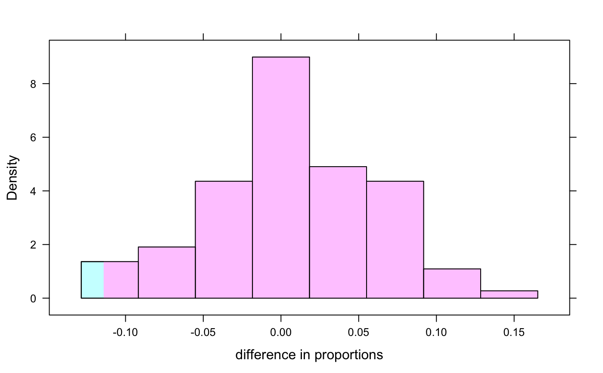

A function to facilitate 2 group permutation tests for a categorical outcome variable
compareProportion(formula, data = NULL, ...)
| formula | a formula |
|---|---|
| data | a data frame in which |
| … | other arguments |
the difference in proportions between the second and first group
This function is now defunct. Use diffprop() instead.
if (require(mosaicData)) { data(HELPrct) # calculate the observed difference mean(homeless=="housed" ~ sex, data=HELPrct) obs <- diffprop(homeless=="housed" ~ sex, data=HELPrct); obs # calculate the permutation distribution nulldist <- do(100) * diffprop(homeless=="housed" ~ shuffle(sex), data=HELPrct) histogram(~ diffprop, groups=(diffprop>= obs), nulldist, xlab="difference in proportions") }